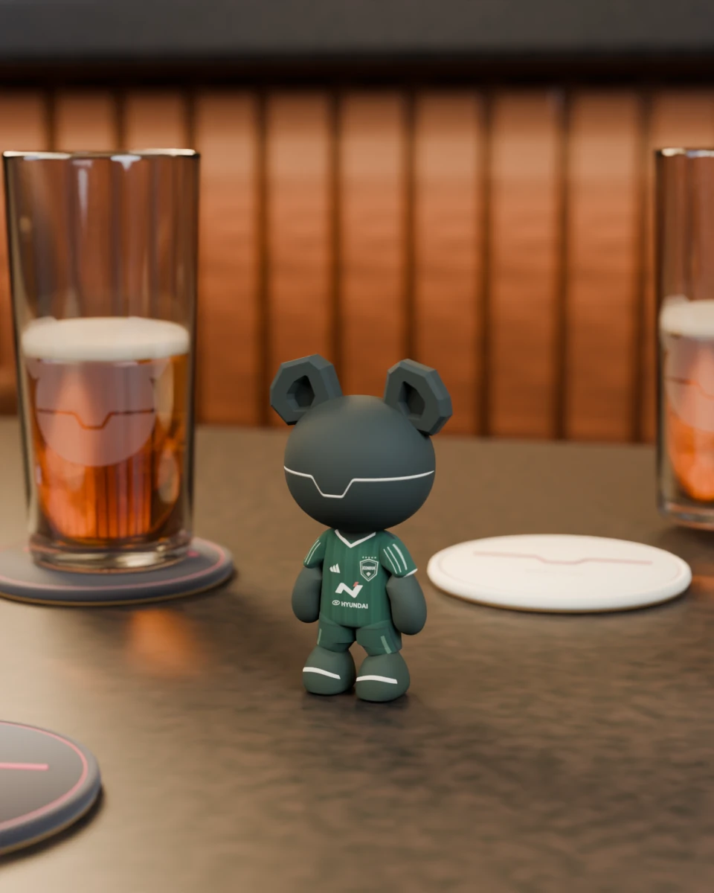
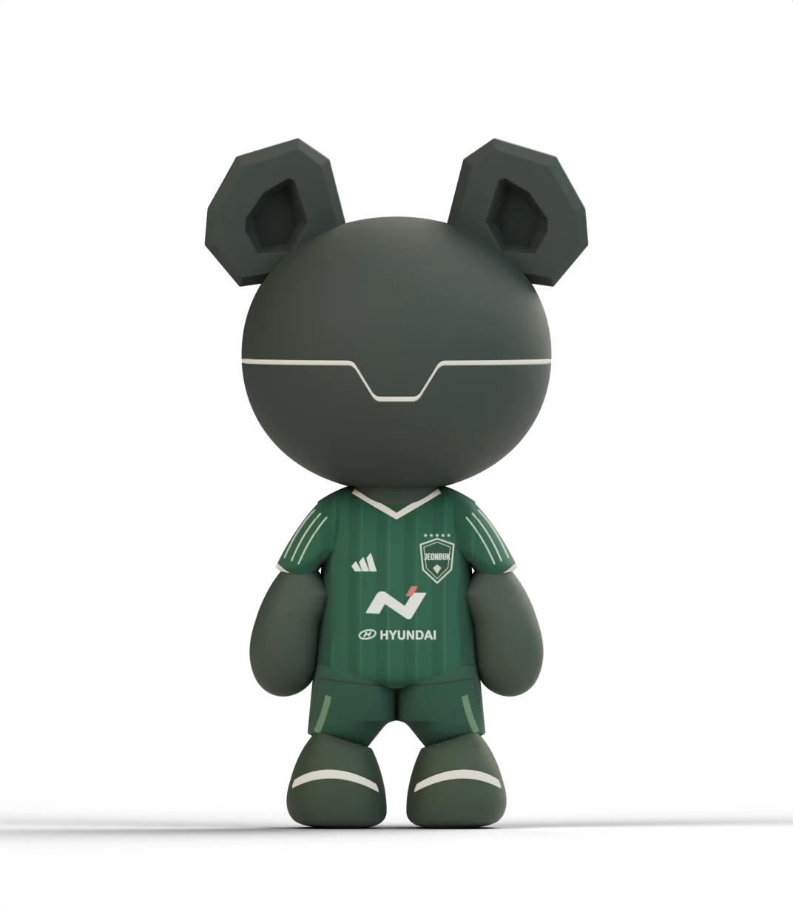

CHARACTER
오티 OT
Overtime · 연장전
끝났지만 아직 끝나지 않은 시간


전북 유니폼을 입은 오티. 얼굴에는 V자로 꺾인 선 하나만 있고 눈, 코, 입은 없다.
말 대신 곁에 남는 것
끌어서 돌려 보거나, 아래 설정을 눌러 보세요.
CHARACTER
Overtime · 연장전
끝났지만 아직 끝나지 않은 시간


전북 유니폼을 입은 오티. 얼굴에는 V자로 꺾인 선 하나만 있고 눈, 코, 입은 없다.
끌어서 돌려 보거나, 아래 설정을 눌러 보세요.